When a drop hits a solid surface it spreads into a thin lamella, reaches a maximum diameter Dmax, and then recedes or rebounds. The maximum spreading ratio βmax = Dmax/D0 controls wetted area and contact time, which matter for spray cooling, coating, printing and anti-icing [1]. For a Newtonian liquid on a given surface, βmax is set by the competition of inertia, viscosity and capillarity, which classical scaling arguments and the Laan et al. interpolation capture well on smooth surfaces [2, 3]. Laser-textured superhydrophobic surfaces add air pockets, contact-line pinning on channel edges and extra viscous dissipation, and no closed-form law accounts for these. This makes texture effects the part that an empirical model must learn.
Može et al. [4] published 1,623 impacts of water and water–glycerol drops on aluminium surfaces with nanosecond-laser channels of six pitches and two depths, plus a smooth hydrophobic reference, recorded at 5,000 frames per second. The same group trained 28 regression models on seven raw inputs and selected an isotropic exponential GP, evaluated with an 80/20 split and 5-fold cross-validation [5]. Every impact condition is repeated about five times and every surface is in training under such a split, so that evaluation measures interpolation between near-replicates. A surface designer needs something else: a prediction, with honest uncertainty, for a surface that has not been made yet.
This paper reconstructs the full Droplet Intelligence study around that question. It follows one line of argument: start from the physics (Re, We, Oh), build a dimensionless representation, compare model families under a protocol that holds out whole surfaces, quantify uncertainty and its failures, and only then add image and video front ends and a deployable predictor. The verified contributions, each tied to the evidence that supports it, are listed in Table 1, and Fig. 1 shows how the parts fit together.
| # | Contribution | Evidence (section, file) | Status |
|---|---|---|---|
| 1 | Surface-held-out (LOSO) benchmark of 13 learners plus GP and XGBoost variants on identical inputs | §7; zoo_table.csv, final/pred_*.npz | Verified |
| 2 | Paired surface bootstrap with a decision rule fixed before comparison | §5.4; benchmark.json, stats.json | Verified |
| 3 | Ablation of input representations, incl. the physics law alone, a surface-blind GP and dimensional inputs | §9; phase2–4.json, raw7_rerun.json | Verified |
| 4 | Interval calibration on cross-validated residuals and a diagnosis of where coverage fails | §10; nested.json, refh_predictions.csv | Verified |
| 5 | Texture fraction φ read directly from SEM images; GP accuracy unchanged | §11; extensions/summary.json | Verified |
| 6 | Automatic D0, V, βmax measurement from side-view video | §12; video_check.json | Verified on synthetic clips only |
| 7 | Browser implementation of the GP that matches Python to 3×10−12 | §13; js_parity.json, browser_latency.json | Verified |
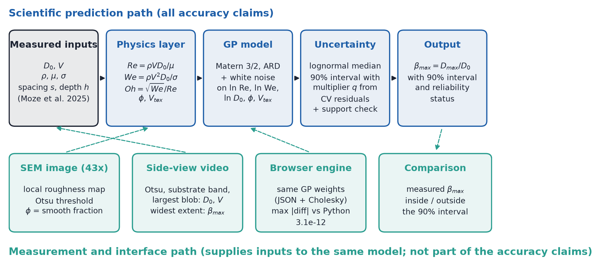
For a drop of diameter D0 and velocity V of a liquid with density ρ, viscosity μ and surface tension σ, three dimensionless groups describe the impact:
Re compares inertia with viscous forces and We compares inertia with capillary forces. The Ohnesorge number Oh is not independent of the other two: by Eq. (1), ln Oh = ½ ln We − ln Re exactly (verified on all impacts to a maximum absolute error of 1.8e-15). Any model that already receives ln Re and ln We therefore gains no information from ln Oh, a point we test in §9. Energy balance gives βmax ∝ Re1/5 when viscosity limits spreading and βmax ∝ We1/2 when capillarity does; Clanet et al. proposed We1/4 for low-viscosity drops [2]. Laan et al. [3] joined the two limits with a Padé approximant in the impact parameter P = We·Re−2/5:
Lee et al. [13] extended this to partial wetting by replacing βmax with (βmax2 − β02)1/2, where β0 is the zero-velocity spreading set by the contact angle. Neither law contains texture geometry; on the textured surfaces studied here, Eq. (2) with A refitted to the training surfaces gives a LOSO RMSE of 0.2503 (A = 1.140, fitted in log space), and 0.2321 over all textured impacts with the textbook A = 1.24. The scaling law sets the trend but misses the surface and the fluid-specific offsets by about a factor of six relative to the learned models (§7).
All impact data come from the public dataset of Može et al. [4]; no new experiments were performed. The substrates are aluminium 1050A plates with laser channels at pitches s = 50, 100, 200, 400, 600 and 800 µm and two mean depths, about 6 µm (S50–S800) and 25 µm (D50–D800). REF-H is a smooth hydrophobic reference plate. Five fluids span pure water to 91 wt% glycerol. The textured set has 1,498 impacts in 297 distinct impact conditions (about five repeats each); REF-H has 125 impacts in 25 conditions. Table 2 gives the measured ranges, computed from the CSV files; Fig. 2 shows the impact conditions and the surfaces.
| Variable | Symbol | Min | Max | Unit |
|---|---|---|---|---|
| Drop diameter | D0 | 2.145 | 2.607 | mm |
| Impact velocity | V | 0.484 | 1.711 | m/s |
| Density | ρ | 997.2 | 1,231.2 | kg/m³ |
| Viscosity | μ | 0.944 | 159.809 | mPa·s |
| Surface tension | σ | 65.69 | 72.46 | mN/m |
| Channel pitch | s | 50 | 800 | µm |
| Channel depth | h | 6 | 25 | µm |
| Reynolds number | Re | 8.9 | 4,434.9 | – |
| Weber number | We | 7.96 | 119.13 | – |
| Ohnesorge number | Oh | 0.0022 | 0.3735 | – |
| Smooth plateau fraction | φ | 0.010 | 0.926 | – |
| Texture volume per area | Vtex | 0.442 | 24.750 | µm |
| Max. spreading ratio | βmax | 1.443 | 3.342 | – |
| REF-H: Re | Re | 9.3 | 4,321.9 | – |
| REF-H: We | We | 9.75 | 110.19 | – |
| REF-H: βmax | βmax | 1.445 | 2.825 | – |
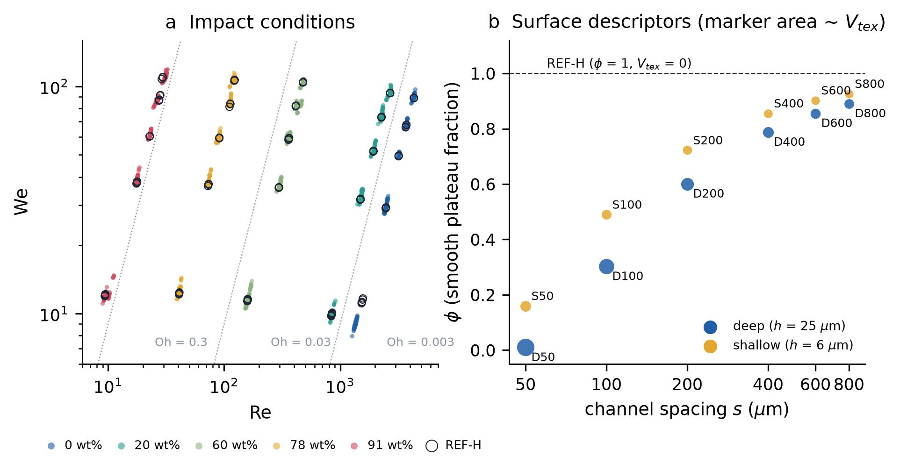
Re, We and Oh were recomputed from the five fluid and impact variables; they match the values supplied in the dataset to a relative error below 5e-07. Pitch and depth are not used directly. Each surface is instead described by two physically interpretable numbers derived from the nominal geometry:
where w is the laser-track width (45 µm for the deep surfaces, 30 µm for the shallow ones, measured from the 43× SEM images in the earlier phase of this project; varying w by ±10 µm changes the REF-H RMSE by less than 0.0002), φ is the fraction of the surface that is untouched plateau and Vtex is the textured volume per unit area. REF-H has φ = 1 and Vtex = 0 by construction, so it is a valid point of the descriptor space and needs no arbitrary code; a raw-geometry encoding has no natural value for a smooth plate (§9). The model inputs are x = (ln Re, ln We, ln D0[mm], φ, Vtex), standardised with means and scales fitted on the training folds only. The target is ln βmax; predictions are returned as the lognormal median exp(μ). Logarithms make the power-law limits of §2 linear and make relative errors uniform across the range of βmax.
Impacts were grouped into conditions (same surface, same fluid, velocities within 0.10 m/s), giving 297 textured conditions. There are no missing values and no duplicate rows. No outlier removal or smoothing was applied to the target.
| Surface | s (µm) | h (µm) | φ geometry | φ image | Vtex (µm) |
|---|---|---|---|---|---|
| D50 | 50 | 25 | 0.010 | 0.217 | 24.75 |
| D100 | 100 | 25 | 0.302 | 0.170 | 17.44 |
| D200 | 200 | 25 | 0.601 | 0.482 | 9.98 |
| D400 | 400 | 25 | 0.788 | 0.780 | 5.31 |
| D600 | 600 | 25 | 0.856 | 0.776 | 3.61 |
| D800 | 800 | 25 | 0.891 | 0.883 | 2.73 |
| S50 | 50 | 6 | 0.160 | 0.471 | 5.04 |
| S100 | 100 | 6 | 0.490 | 0.528 | 3.06 |
| S200 | 200 | 6 | 0.723 | 0.650 | 1.67 |
| S400 | 400 | 6 | 0.856 | 0.806 | 0.87 |
| S600 | 600 | 6 | 0.902 | 0.882 | 0.58 |
| S800 | 800 | 6 | 0.926 | 0.861 | 0.44 |
| REF-H | – | – | 1.000 | 1.000 | 0 |
(i) In-distribution (ID): GroupKFold with 5 folds over the 297 conditions, so that repeats of one condition never straddle training and test. This answers the interpolation question of earlier work and is reported only for context. (ii) Leave-one-surface-out (LOSO): 12 folds, each holding out every impact on one textured surface. This is the primary metric. (iii) REF-H: models trained on all 12 textured surfaces predict the 125 smooth-plate impacts. REF-H was never used to fit, tune or select any model.
RMSE, MAE and R² are computed on βmax (not on its logarithm) over pooled impacts. Interval coverage is the fraction of impacts whose measured βmax lies inside the predicted 90% interval. Where a metric could not be computed from saved per-impact predictions it is marked "Not available from the supplied evidence".
LOSO errors are correlated within a held-out surface, so the surface, not the impact, is the independent unit [12]. Differences in RMSE between two models were assessed with a paired bootstrap that resamples the 12 surfaces with replacement and keeps all impacts of a drawn surface together (4,000 draws, seed 23); confidence intervals for a single model's RMSE use the same resampling. The decision rule, fixed before the comparison, was: replace the baseline only if the 95% interval of the difference excludes zero; otherwise keep the simpler model. A positive difference means the candidate is worse than the GP baseline.
Only models that were implemented and evaluated in code are benchmarked. Table 4 lists the main families with hyperparameters extracted from the source (droplet/models.py in v2; src/benchmark.py and src/models_extra.py in the v1 archive). All tabular models receive the same five inputs unless stated otherwise.
| Model | Configuration |
|---|---|
| GP baseline (final) | ConstantKernel(1.0) × Matérn(ν = 3/2, ARD length scales, bounds 10−2–103) + WhiteKernel(10−3, bounds 10−6–0.1); normalize_y; L-BFGS-B, maxiter 100, ftol 10−9; random_state 23; target ln βmax |
| GP Matérn 5/2 | as baseline with ν = 5/2 |
| GP fluid–surface interaction | Matérn 3/2 on (ln Re, ln We, ln D0) and on (φ, Vtex); kernel a·kf + b·ks + c·kfks + white noise |
| Laan backbone + GP residual | Eq. (2) with A refitted by least squares in each fold (bounds 0.01–20); baseline GP on ln βmax − ln βLaan |
| XGBoost | n_estimators 400, learning_rate 0.05, max_depth 4, subsample 0.8, colsample_bytree 0.8, min_child_weight 5, random_state 0 |
| Random forest / Extra trees | 500 trees, min_samples_leaf 3 |
| LightGBM | 400 trees, learning_rate 0.05, num_leaves 15, min_child_samples 10, subsample 0.8, colsample 0.8 |
| CatBoost | 800 iterations, depth 5, learning_rate 0.05 |
| MLP / deep ensemble | 64–64 ReLU, L2 α = 0.1, early stopping, max_iter 5000; ensemble of 5 seeds |
| FT-Transformer | d = 32, 2 layers (src/ft_transformer.py) |
| SVR / kernel ridge / kNN / ridge | SVR RBF C = 10, ε = 0.005; KRR RBF α = 10−3, γ = 0.2; kNN k = 10 distance-weighted; ridge on quadratic log features, RidgeCV α ∈ 10−4–102 |
| SEM CNN (descriptor encoder) | shared 3-layer CNN over the 43×, 100× and 350× views, 32-unit head, two sigmoid outputs (φ, Vtex/25); 250 epochs, seed 23; weak labels from Eq. (3) |
Why a GP is a natural first choice here: the dataset is small (1,498 impacts, 297 conditions, 12 surfaces), the response is smooth in the dimensionless inputs, and the design use needs an uncertainty estimate. A GP with automatic relevance determination (ARD) [6] gives a posterior mean and variance from one fitted kernel, its length scales show which inputs matter, and with about 1,500 points exact inference is cheap. Gradient-boosted trees [8] model sharp interactions well but give no native predictive variance and extrapolate as piecewise constants, which matters when the held-out surface lies at the edge of the descriptor range.
| Model | Inputs | ID RMSE | LOSO RMSE | LOSO MAE | LOSO R² | REF-H RMSE | REF-H MAE | REF-H R² | Δ LOSO (95% CI) |
|---|---|---|---|---|---|---|---|---|---|
| GP Matérn 3/2 ARD (final) | 5 dimensionless | 0.0363 | 0.0400 | 0.0242 | 0.9914 | 0.0591 | 0.0430 | 0.9773 | – |
| GP Matérn 5/2 | 5 dimensionless | n/a | 0.0398 | 0.0240 | 0.9915 | 0.0590 | 0.0430 | 0.9774 | [-0.0009, +0.0005] |
| GP fluid–surface interaction | 5 dimensionless | n/a | 0.0412 | 0.0242 | 0.9909 | 0.0621 | 0.0465 | 0.9750 | [-0.0043, +0.0076] |
| Laan backbone + GP residual | 5 + Laan law | n/a | 0.0388 | 0.0236 | 0.9919 | 0.0593 | 0.0431 | 0.9772 | [-0.0030, +0.0001] |
| GP, dimensional inputs (re-run) | D, V, ρ, σ, μ, s, h | n/a | 0.0372 | 0.0217 | 0.9926 | 0.0582 | n/a | n/a | [-0.0084, +0.0014] |
| XGBoost | 5 dimensionless | 0.0462 | 0.0563 | 0.0319 | 0.9830 | 0.0593 | 0.0459 | 0.9772 | [+0.0053, +0.0282] |
| XGBoost, raw 7 | D, V, ρ, σ, μ, s, h | 0.0464 | 0.0513 | 0.0303 | 0.9859 | 0.0651 | 0.0506 | 0.9725 | [+0.0033, +0.0195] |
| XGBoost, Re/We/Oh + s, h | Re, We, Oh, s, h | 0.0505 | 0.0535 | 0.0310 | 0.9846 | 0.0693 | 0.0569 | 0.9688 | [+0.0028, +0.0250] |
| XGBoost, hybrid | raw 7 + Re, We, Oh | 0.0436 | 0.0487 | 0.0282 | 0.9873 | 0.0640 | 0.0476 | 0.9734 | [+0.0017, +0.0149] |
| Power law + XGBoost residual | 5 + power law | 0.0497 | 0.0541 | 0.0310 | 0.9843 | 0.0691 | 0.0568 | 0.9690 | [+0.0031, +0.0273] |
| Random forest | 5 dimensionless | 0.0440 | 0.0462 | n/a | n/a | 0.0628 | 0.0483 | 0.9744 | – |
| Extra trees | 5 dimensionless | 0.0437 | 0.0465 | n/a | n/a | 0.0634 | 0.0482 | 0.9739 | – |
| FT-Transformer (d=32, 2 layers) | 5 dimensionless | 0.0455 | 0.0505 | n/a | n/a | 0.0671 | 0.0510 | 0.9708 | – |
| CatBoost | 5 dimensionless | 0.0446 | 0.0524 | n/a | n/a | 0.0628 | 0.0477 | 0.9744 | – |
| Deep ensemble (5 x MLP) | 5 dimensionless | 0.0450 | 0.0525 | n/a | n/a | 0.0674 | 0.0513 | 0.9705 | – |
| LightGBM | 5 dimensionless | 0.0509 | 0.0591 | n/a | n/a | 0.0598 | 0.0475 | 0.9768 | – |
| Ridge, quadratic in log-features | 5 dimensionless | 0.0541 | 0.0638 | n/a | n/a | 0.0702 | 0.0531 | 0.9680 | – |
| MLP (64-64, strong L2) | 5 dimensionless | 0.0525 | 0.0701 | n/a | n/a | 0.0820 | 0.0655 | 0.9563 | – |
| kNN (k=10, distance-weighted) | 5 dimensionless | 0.1322 | 0.0760 | n/a | n/a | 0.0608 | 0.0461 | 0.9760 | – |
| SVR (RBF) | 5 dimensionless | 0.0454 | 0.1085 | n/a | n/a | 0.0491 | 0.0324 | 0.9844 | – |
| Kernel ridge (RBF) | 5 dimensionless | 0.0442 | 0.2568 | n/a | n/a | 0.0475 | 0.0321 | 0.9853 | – |
| Laan law alone (A refit) | P = We·Re−2/5 | n/a | 0.2503 | n/a | n/a | 0.2528 | n/a | n/a | [+0.2035, +0.2174] |
The GP is the most accurate of the 13 learners screened on identical inputs (Table 5, Fig. 3; parity plots in Fig. 4). Its LOSO RMSE is 0.0400 (95% surface-bootstrap interval 0.0352–0.0451), with MAE 0.0242 and R² 0.9914; the ID RMSE is 0.0363, so moving from seen to unseen surfaces costs about 10% in RMSE. XGBoost on the same inputs scores 0.0563, significantly worse (Δ [+0.0053, +0.0282]); the GP wins on 9 of 12 held-out surfaces and keeps 87% of impacts within ±0.05 against 81% for XGBoost. Random forest and extra trees (0.0462, 0.0465) are the strongest non-GP learners. The worst-case held-out surface for the GP is D50 (0.059), the densest texture, whose φ = 0.010 lies at the edge of the descriptor range.
REF-H ranks the models differently. SVR and kernel ridge, which are poor under LOSO (0.108 and 0.257), have the lowest REF-H RMSE (0.0491, 0.0475), and XGBoost (0.0593) ties the GP (0.0591; difference interval [-0.0082, +0.0059]). REF-H is a single surface at φ = 1, outside the textured range, so one surface cannot rank models: a learner that collapses toward a smooth fluid-only trend can do well there while failing on the textured surfaces it was designed for. We therefore select on LOSO and report REF-H as an out-of-range stress test.
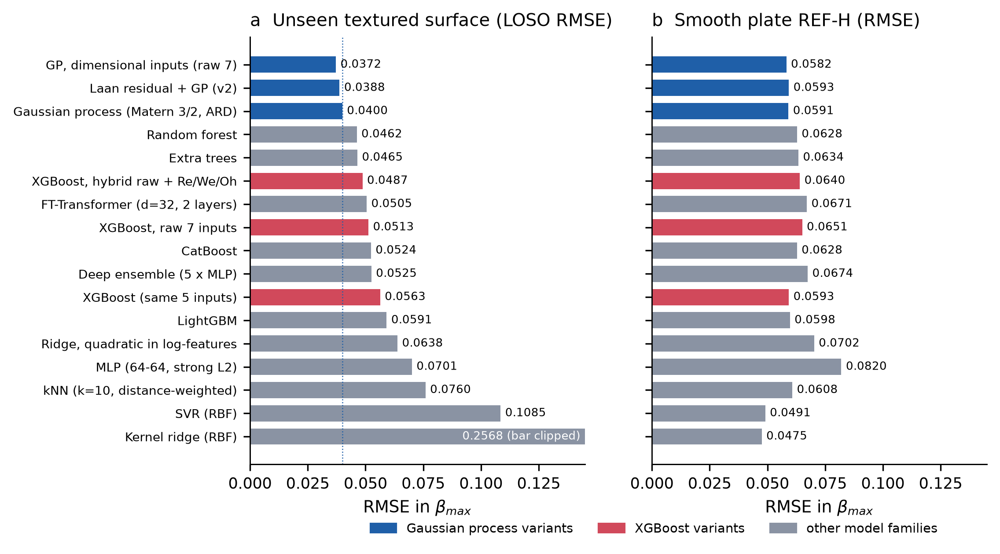
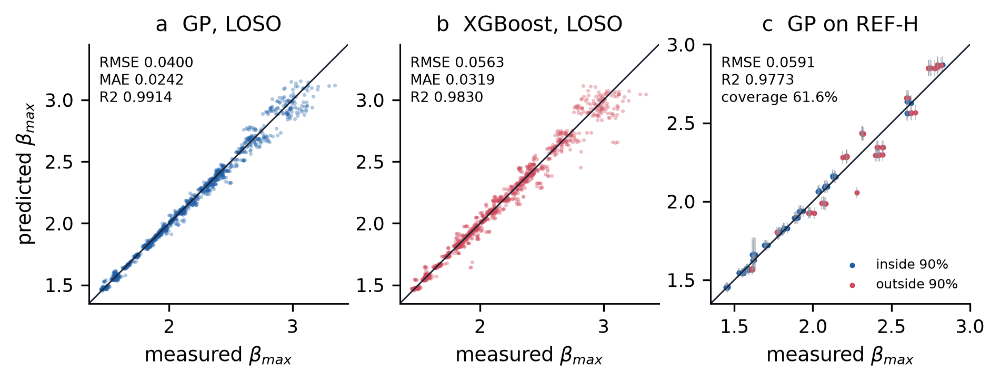
Three mechanisms explain Table 5. First, data size and smoothness favour kernel methods. The response is a smooth, nearly monotone function of ln Re and ln We, sampled on a lattice of about 25 conditions per surface. A GP interpolates such a function with a few hyperparameters, whereas tree ensembles must approximate it by steps and need many more conditions per region to do so finely. When a whole surface is removed, the GP borrows strength along the length scales of φ and Vtex; trees can only reuse the leaves of the nearest training surfaces.
Second, interactions and extrapolation. Gradient boosting captures fluid–surface interactions readily, and its deficit to the GP is smaller on seen surfaces (ID 0.0462 vs 0.0363) than on unseen ones (LOSO 0.0563 vs 0.0400). But a held-out surface such as D50 lies at the edge of the φ range, where a tree prediction is constant beyond the last split. An explicit interaction kernel did not help the GP either (LOSO 0.0412, Δ [-0.0043, +0.0076]): with 12 surfaces there is little information to learn a separate surface covariance.
Third, uncertainty. The GP returns a posterior variance for every query, which grows away from the data (Fig. 9b) and can be calibrated (§10). XGBoost has no native predictive variance; it can be wrapped in quantile loss or ensembles, but those were not evaluated here, so no calibrated XGBoost interval is claimed. The deep ensemble (LOSO 0.0525) and FT-Transformer (0.0505) were less accurate than the GP at this data size.
The CNN plays a different role. It does not predict βmax; it reads texture descriptors from SEM images so that a new surface can be described without measuring its geometry. Feeding CNN-predicted descriptors to the GP gave LOSO 0.0384 (Δ [-0.0038, +0.0005], not significant), so image-derived descriptors are a complement to, not a replacement for, the physics-based model. The physical image reader of §11 achieves the same without training a network.
| Representation | LOSO RMSE | REF-H RMSE | Δ LOSO vs final (95% CI) | Source |
|---|---|---|---|---|
| Laan law alone (A refit per fold) | 0.2503 | 0.2528 | [+0.2035, +0.2174] | ablation.json |
| Re, We, Oh + s, h (earlier PIML set) | 0.0445 | 0.0686 | n/a | phase2.json |
| ln Re, ln We, φ, Vtex | 0.0477 | 0.0547 | n/a | phase3.json |
| + ln Oh | 0.0477 | 0.0547 | n/a (identical inputs span) | phase3.json |
| + Bond number | 0.0425 | 0.0599 | n/a | phase3.json |
| + ln D0 = final model | 0.0400 | 0.0591 | 0 | phase3.json |
| final − φ | 0.0456 | 0.0655 | n/a | phase3.json |
| final − Vtex | 0.0410 | 0.0640 | n/a | phase3.json |
| surface-blind (ln Re, ln We, ln D0) | 0.0462 | 0.0690 | [-0.0026, +0.0144] | ablation.json |
| raw s, h instead of φ, Vtex (REF-H = 0/0) | 0.0411 | 0.0586 | n/a | phase4.json |
| raw fluid (D, V, ρ, σ, μ) + φ, Vtex | 0.0414 | 0.0571 | n/a | phase_extra_raw_phi.json |
| dimensional raw 7 (D, V, ρ, σ, μ, s, h) † | 0.0372 | 0.0582 | [-0.0084, +0.0014] | raw7_rerun.json |
| Laan backbone + GP residual | 0.0388 | 0.0593 | [-0.0030, +0.0001] | benchmark.json |
| φ read from SEM image (+ Vtex) | 0.0398 | 0.0595 | [-0.0057, +0.0047] | extensions |
| ln Re, ln We, ln D0, image φ only | 0.0397 | 0.0636 | [-0.0068, +0.0045] | extensions |
| + cos θadv (water advancing angle) | 0.0480 | 0.3771 | [+0.0004, +0.0171] | extensions |
| Lee β0 correction | 0.0398 | 0.2279 | [-0.0013, +0.0009] | extensions |
Four results stand out (Table 6, Fig. 5). (1) The physics law alone is not competitive (LOSO 0.250); the learned model reduces error about sixfold. (2) Oh is redundant: adding ln Oh to (ln Re, ln We, φ, Vtex) gives 0.0477 against 0.0477, identical to four decimals, as the identity ln Oh = ½ ln We − ln Re requires. The useful third fluid-side input is ln D0, which lowers LOSO from 0.0477 to 0.0400 because D0 varies at fixed Re and We between fluids (and the Bond number, which also carries D0, helps for the same reason: 0.0425). Adding ln D0 raises the REF-H error from 0.0547 to 0.0591; we kept it because selection is on LOSO. (3) Texture descriptors matter but are second order: removing φ costs 0.0057 and the surface-blind GP scores 0.0462, yet the bootstrap interval of the surface-blind difference includes zero ([-0.0026, +0.0144]), so with 12 surfaces the texture effect is not statistically established. SHAP values and ARD length scales agree (Fig. 6): ln Re and ln We dominate, φ and Vtex are an order of magnitude smaller.
(4) Dimensional inputs scored lower: a GP on the raw seven variables reaches LOSO 0.0372 (MAE 0.0217, R² 0.9926), lower than the final model. Under the pre-registered rule this is not a significant improvement (Δ [-0.0084, +0.0014] includes zero), and the raw encoding has two practical defects. It must assign the smooth plate an arbitrary pitch and depth, and the REF-H error depends strongly on that choice: 0.058 for s = h = 0, 0.077 for 800/25 and 0.375 for 5000/0. It also cannot describe a new texture by anything other than the same two numbers. We keep the dimensionless model as the default and report the dimensional result as an unresolved alternative that more surfaces could settle. The same applies to the Laan-backbone residual GP (LOSO 0.0388, Δ [-0.0030, +0.0001]). An earlier run that resampled replicate conditions instead of surfaces reported an interval that excluded zero ([-0.0021, -0.0004]); with surfaces resampled it does not, and we report the surface result.
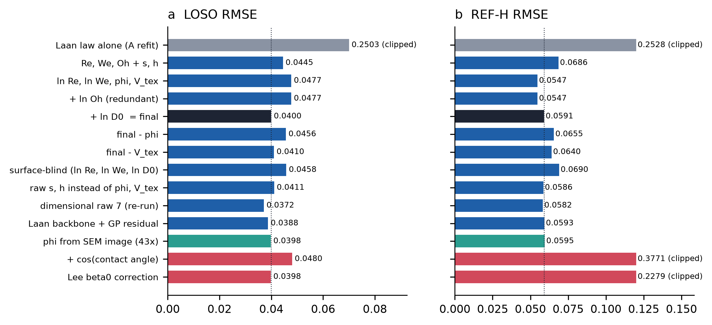
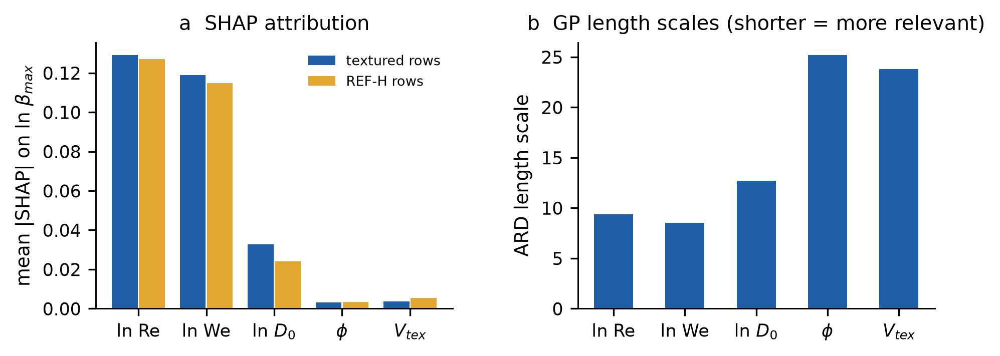
LOSO residuals have no trend with We or Oh (Fig. 7a, b), but their spread depends strongly on the fluid: RMSE falls from 0.062 for water to 0.016 for 91 wt% glycerol. Part of this is irreducible: the standard deviation of βmax between repeats of the same condition is 0.026 for water and 0.026 for 20 wt% glycerol, against 0.009 for 91 wt% (computed from the data). The physical origin of this extra scatter for low-viscosity drops was not investigated here. The overall bias is small (-0.0044). Per-surface RMSE ranges from 0.029 to 0.059 (Fig. 7c); the two densest textures, D50 and S50, are the worst and both are under-predicted on average (mean residual -0.024 and -0.029), consistent with the descriptor range edge discussed in §7. Large errors cluster at high Re and high We (Fig. 9a).
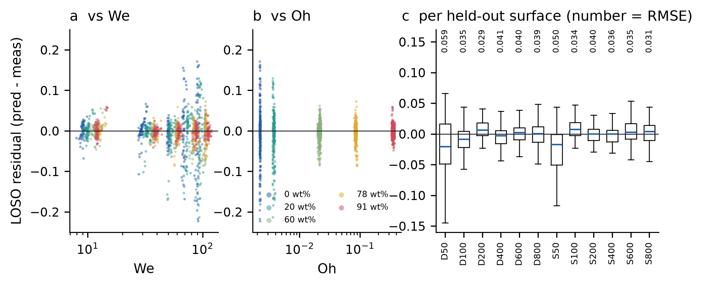
The nominal GP interval exp(μ ± 1.645σ) is replaced by exp(μ ± qσ), where q is set from normalised cross-validated residuals so that 90% of held-out impacts fall inside; q = 1.645 for the deployed model. This is empirical calibration in the spirit of split conformal prediction [9], not a distribution-free guarantee: impacts share surfaces and a new surface is a distribution shift [10]. In a nested design, where both the GP variant and q were chosen inside each outer fold without the held-out surface, the RMSE was 0.0415 (vs 0.0400 for the fixed baseline) and coverage 92.6%, with a mean interval width of 0.115. The small RMSE increase is the price of honest selection [11].
Coverage is uneven (Fig. 8). Under LOSO it is 90.1% overall but 76.3% for water and 98.3% for 91 wt% glycerol; per surface it ranges from 84.0% to 96.0%. On REF-H it drops to 61.6%: 36% and 24% for the two least viscous fluids, but 96% for 91 wt%. On REF-H the water errors are not a constant offset (mean bias +0.001, replicate scatter 0.014) but vary between conditions, so the smooth plate departs from the textured trend in a condition-dependent way that the model cannot know about. The GP noise term is a single constant, while the true scatter is fluid-dependent; a heteroscedastic noise model is the obvious remedy (§16). The interval is therefore trustworthy for viscous fluids and too narrow for water-like fluids on a smooth or new surface type. The predictor reports this as a reliability flag (§13).
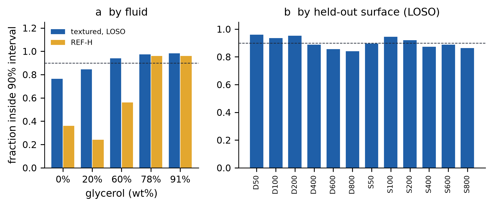
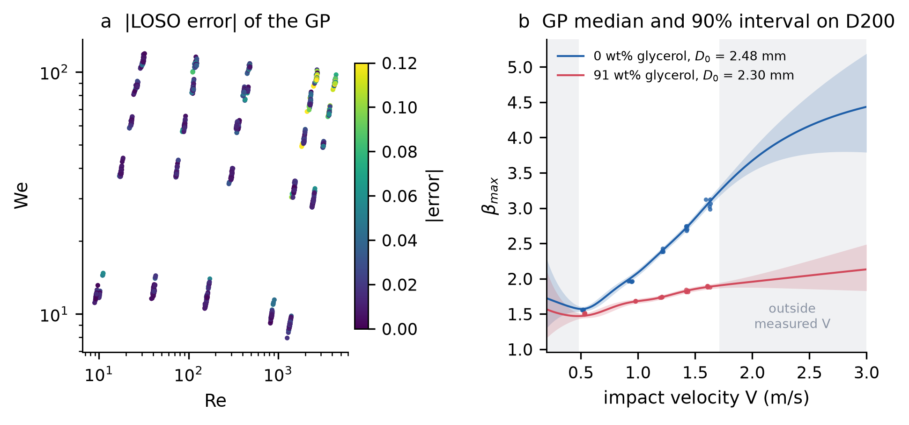
To predict a surface that has not been characterised geometrically, the texture must be read from an image. Two routes were evaluated on the 39 SEM micrographs of the dataset (13 surfaces × 43×, 100× and 350×; JEOL JCM-7000, 2560 × 2048 px, annotation bar from row 1880; pixel size from the instrument magnification tag).
Physical reader. The local standard deviation of grey level over a 12.7 µm window (Gaussian pre-smoothing, σ = 1 px) separates rough laser tracks from smooth plateaus; a single Otsu threshold [14] over the textured training images (value 12.32) gives φ as the fraction of plateau pixels. The reader is valid near 43× (1.157 µm/px); at higher magnifications it under-reads φ and is refused by the software. Image φ agrees with the geometric φ to within 0.12 for pitches ≥ 200 µm, differs more on the densest textures (D50: 0.217 vs 0.010; S50: 0.471 vs 0.160), and reads REF-H as 1.000, the correct smooth-surface value, without ever seeing it in training (Fig. 10).
Using image φ in place of geometric φ, with the threshold refitted inside every LOSO fold, gives LOSO 0.0398 (Δ [-0.0057, +0.0047]); a GP on ln Re, ln We, ln D0 and image φ alone gives 0.0397 (Δ [-0.0068, +0.0045]) and REF-H 0.0636. Neither difference is significant, so a new surface can be described by one 43× SEM image with no measurable loss of accuracy. The image disagreement on D50 and S50 suggests the nominal φ formula over-states how fully dense textures are ablated; it does not show which of the two is physically right.
CNN encoder. A small CNN trained in each fold on the three magnifications, with Eq. (3) values as weak labels, gave LOSO 0.0384 when its descriptors were fed to the GP (Δ [-0.0038, +0.0005]). Its GP coverage was 88.0% and does not include encoder uncertainty. Trained on all textured surfaces, the CNN reads REF-H as φ = 0.709 (the archived first CNN: 0.693) rather than 1. The physical reader is simpler, needs no training images and extrapolates correctly to the smooth plate, so it is the image route used by the software.
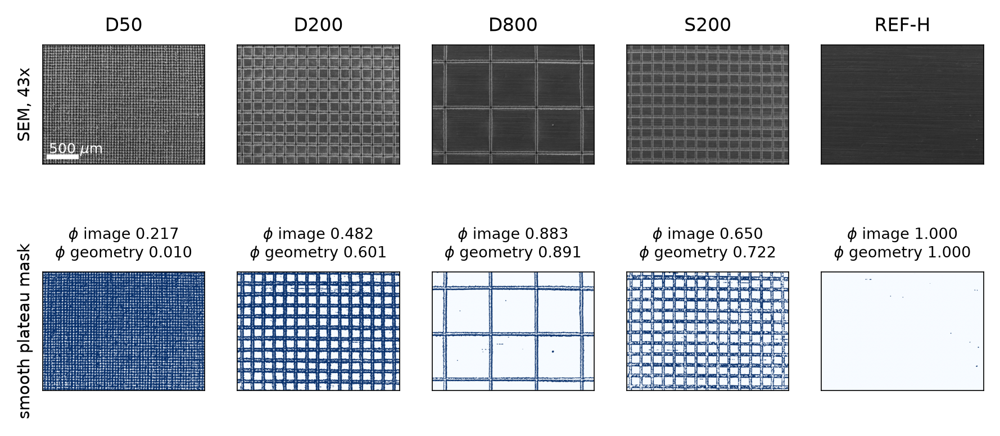
A backlit high-speed side view shows a dark drop and a dark substrate on a bright background. The pipeline (droplet/video.py) needs only the camera frame rate and the pixel scale: (i) one Otsu threshold over the clip; (ii) the substrate is the lowest band of rows that are at least 80% dark; (iii) before contact the drop is the largest dark blob above it, D0 is its equivalent-circle diameter (median of the last eight pre-contact frames) and V is the slope of a straight-line fit of its centroid height against time; (iv) after contact the spreading diameter D(t) is the blob's horizontal extent and βmax = max D(t)/D0; (v) the GP predicts βmax from D0, V, the fluid and the surface, and the measurement is compared with the calibrated 90% interval. A watch mode processes each new file in a folder and appends a row to a results table.
No real side-view clips of these surfaces were available to the study (the dataset provides measured values, not video), so the pipeline was verified on synthetic clips rendered with known D0, V and βmax at 5,000 fps, with blur and sensor noise (Fig. 11). Over four clips the recovered D0 and V were within 0.08% and 0.01% of truth and βmax within 1.9%; analysis took 0.13–0.20 s per 54-frame clip in Python. The browser port initially timed frames by their position in the list, and dropped frames during playback shifted V (one headless run read V = 1.414 m/s for a true 1.2 m/s). Frames are now indexed by their media timestamps; five repeated browser runs then gave D0 = 2.500 mm, V = 1.200 m/s and βmax = 2.580 for a true 2.5 mm, 1.2 m/s and 2.6. These are software checks only: accuracy on real recordings, with reflections, satellite drops, non-spherical drops and tilted substrates, is untested.
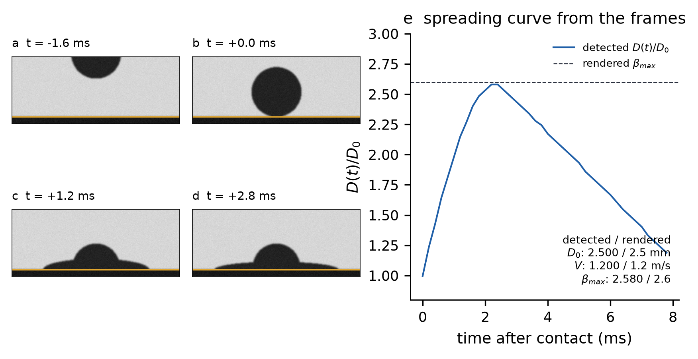
The scientific result of this paper is the model and its evaluation (§5–§10). This section describes how the same model is packaged for use; it adds no accuracy claim. Fig. 1 separates the two paths: the prediction path (inputs → dimensionless groups → GP → calibrated interval) and the measurement and interface path (SEM image, video, browser), which only supplies inputs to, or displays outputs of, the same model.
The trained GP is exported as JSON (training inputs, kernel hyperparameters, α = K−1y) plus the packed lower-triangular Cholesky factor of K in float64, and evaluated by a dependency-free JavaScript engine. Over 30 test cases and 5 model variants, the browser and Python predictions agree to 2.7e-12 in βmax and 3.1e-12 in the interval bounds, and the engine rejects 6 malformed inputs. Every prediction carries a reliability status: inputs outside the measured range, a Mahalanobis feature-space score above the training 95th percentile, and smooth surfaces (where coverage is known to be poor) are flagged. The interface (Fig. 12) offers prediction from inputs, from an uploaded SEM image and from an uploaded video, all computed locally in the browser.
| Implementation | Median (ms) | 95th percentile (ms) | Environment |
|---|---|---|---|
| Python predictor (droplet.predict, incl. input validation) | 7.4 | 10.7 | cloud container CPU |
| Browser engine (engine.mjs) | 2.4 | 4.2 | headless Chromium, same container |
| Video analysis, 54 frames 300×400 px (Python) | 132–204 | – | cloud container CPU, 4 clips |
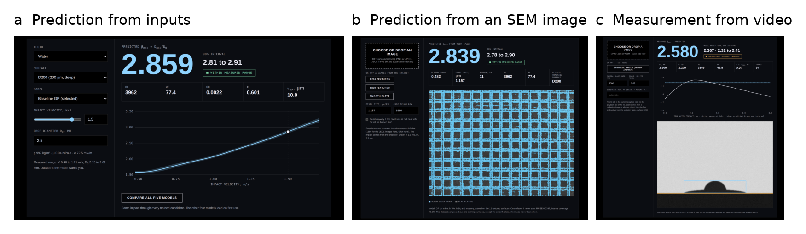
Three findings generalise beyond this dataset. First, the evaluation protocol changes the conclusion. Under a condition-grouped split XGBoost trails the GP by 0.010 in RMSE; under LOSO, the question that matters for design, the gap grows to 0.016, while random forest stays 0.008 (ID) and 0.006 (LOSO) behind. Rankings on seen surfaces therefore do not transfer automatically to unseen ones, and a single held-out surface such as REF-H is too small a test to rank models.
Second, physics enters most usefully as representation, not as a hard-coded law. The dimensionless inputs make the problem nearly linear in its dominant directions, encode the smooth plate as a natural point (φ = 1, Vtex = 0) and make Oh redundant by construction. A Laan-law backbone did not improve significantly on this, and the law on its own is about six times worse. The dimensional GP's lower but non-significant LOSO error shows the limits of 12 surfaces: two representations that differ by 0.003 cannot be told apart.
Third, uncertainty is where the model is weakest. Point accuracy is good (R² 0.99 on unseen surfaces), but a constant noise term cannot represent fluid-dependent scatter, and the intervals under-cover water-like drops, severely so on the smooth plate. Wettability inputs, an obvious physical fix, failed here because the training angles are confined to a narrow superhydrophobic range; the smooth plate's βmax is close to the textured surfaces', not to the Lee prediction.
On 12 laser-textured surfaces held out one at a time, a Matérn-3/2 GP on ln Re, ln We, ln D0, φ and Vtex predicts the maximum spreading ratio with RMSE 0.0400 and R² 0.991, significantly better than XGBoost on the same inputs and about six times better than the Laan law, and with intervals that reach 90.1% coverage overall but fail for low-viscosity drops on new surface types. Oh carries no information beyond Re and We. The texture fraction can be read from one SEM image without loss of accuracy, a video pipeline extracts the model inputs automatically, and the model runs interactively in a browser with outputs identical to Python.
Everything below is proposed and has not been evaluated in this study. It is kept separate from the results above.
| Direction | Purpose | What it needs |
|---|---|---|
| Heteroscedastic GP (fluid-dependent noise) | Fix low-viscosity under-coverage | Re-fit and LOSO coverage test |
| Quantile or conformalised XGBoost intervals | Fair uncertainty comparison with trees | Implementation and the same calibration protocol |
| Wettability as input | Extend to partially wetting surfaces | Surfaces with intermediate contact angles; measured REF-H angle |
| More surfaces, other materials and laser processes | Narrow bootstrap intervals; test transfer | New experiments |
| Real high-speed footage | Validate the video pipeline | Calibrated side-view recordings with ground truth |
| Temporal models of D(t) | Predict the full spreading curve, not only βmax | Frame-level data |
| Live camera loop | True capture-to-prediction real-time operation | Camera integration and latency measurement |
| Active learning over texture design | Choose the next surface to fabricate | Acquisition function on the GP; experiments |
The author thanks M. Može and co-authors for publishing the dataset used here. An AI assistant was used to help write analysis code and edit the text; the author designed the study, checked every result against the saved result files, and takes responsibility for the content.
Impact data: Može et al., Mendeley Data, doi:10.17632/wsh8rxwd38.1 [4]. Code, trained model bundles, per-impact predictions, figure and table scripts are in the project repository (Appendix B).
[1] C. Josserand, S. T. Thoroddsen. Drop impact on a solid surface. Annual Review of Fluid Mechanics 48 (2016) 365–391.
[2] C. Clanet, C. Béguin, D. Richard, D. Quéré. Maximal deformation of an impacting drop. Journal of Fluid Mechanics 517 (2004) 199–208.
[3] N. Laan, K. G. de Bruin, D. Bartolo, C. Josserand, D. Bonn. Maximum diameter of impacting liquid droplets. Physical Review Applied 2 (2014) 044018. doi:10.1103/PhysRevApplied.2.044018
[4] M. Može, S. Jereb, R. Lovšin, J. Berce, M. Zupančič, I. Golobič. Dataset on droplet spreading and rebound behavior of water and viscous water-glycerol mixtures on superhydrophobic surfaces with laser-made channels. Data in Brief 61 (2025) 111697. doi:10.1016/j.dib.2025.111697. Data: doi:10.17632/wsh8rxwd38.1
[5] S. Jereb, J. Berce, R. Lovšin, M. Zupančič, M. Može, I. Golobič. Investigation of droplet spreading and rebound dynamics on superhydrophobic surfaces using machine learning. Biomimetics 10 (2025) 357. doi:10.3390/biomimetics10060357
[6] C. E. Rasmussen, C. K. I. Williams. Gaussian Processes for Machine Learning. MIT Press, 2006.
[7] F. Pedregosa et al. Scikit-learn: machine learning in Python. Journal of Machine Learning Research 12 (2011) 2825–2830.
[8] T. Chen, C. Guestrin. XGBoost: a scalable tree boosting system. Proc. 22nd ACM SIGKDD (2016) 785–794.
[9] A. N. Angelopoulos, S. Bates. A gentle introduction to conformal prediction and distribution-free uncertainty quantification. arXiv:2107.07511 (2021).
[10] R. F. Barber, E. J. Candès, A. Ramdas, R. J. Tibshirani. Conformal prediction beyond exchangeability. Annals of Statistics 51 (2023) 816–845.
[11] G. C. Cawley, N. L. C. Talbot. On over-fitting in model selection and subsequent selection bias in performance evaluation. Journal of Machine Learning Research 11 (2010) 2079–2107.
[12] D. R. Roberts et al. Cross-validation strategies for data with temporal, spatial, hierarchical, or phylogenetic structure. Ecography 40 (2017) 913–929.
[13] J. B. Lee, N. Laan, K. G. de Bruin, G. Skantzaris, N. Shahidzadeh, D. Derome, J. Carmeliet, D. Bonn. Universal rescaling of drop impact on smooth and rough surfaces. Journal of Fluid Mechanics 786 (2016) R4.
[14] N. Otsu. A threshold selection method from gray-level histograms. IEEE Transactions on Systems, Man, and Cybernetics 9 (1979) 62–66.
[15] S. M. Lundberg, S.-I. Lee. A unified approach to interpreting model predictions. Advances in Neural Information Processing Systems 30 (2017) 4765–4774.
| Model | D50 | D100 | D200 | D400 | D600 | D800 | S50 | S100 | S200 | S400 | S600 | S800 |
|---|---|---|---|---|---|---|---|---|---|---|---|---|
| GP (final) | 0.059 | 0.035 | 0.029 | 0.041 | 0.040 | 0.039 | 0.050 | 0.034 | 0.040 | 0.036 | 0.035 | 0.031 |
| GP Matérn 5/2 | 0.058 | 0.035 | 0.030 | 0.043 | 0.041 | 0.039 | 0.052 | 0.033 | 0.040 | 0.036 | 0.032 | 0.030 |
| GP interaction | 0.082 | 0.038 | 0.023 | 0.031 | 0.041 | 0.035 | 0.041 | 0.034 | 0.040 | 0.037 | 0.031 | 0.032 |
| Laan + GP residual | 0.051 | 0.034 | 0.029 | 0.041 | 0.040 | 0.039 | 0.047 | 0.034 | 0.040 | 0.036 | 0.035 | 0.031 |
| GP dimensional (raw 7) | 0.063 | 0.033 | 0.020 | 0.032 | 0.041 | 0.039 | 0.022 | 0.024 | 0.039 | 0.044 | 0.034 | 0.035 |
| GP + SEM-CNN descriptors | 0.054 | 0.037 | 0.028 | 0.042 | 0.044 | 0.041 | 0.045 | 0.021 | 0.039 | 0.036 | 0.035 | 0.029 |
| XGBoost (same inputs) | 0.115 | 0.049 | 0.023 | 0.051 | 0.052 | 0.035 | 0.062 | 0.027 | 0.047 | 0.066 | 0.044 | 0.049 |
| GP image φ only | 0.070 | 0.039 | 0.023 | 0.036 | 0.045 | 0.044 | 0.020 | 0.028 | 0.044 | 0.039 | 0.034 | 0.031 |
| Item | Value |
|---|---|
| Data | Može et al. [4], files 01–05 (CSV) and 39 SEM TIFFs; SHA-256 hashes in Droplet_Intelligence_v2/results/data_audit.json |
| Software | Python 3.11, scikit-learn [7], XGBoost [8], LightGBM, CatBoost, PyTorch (CNN), SciPy; Node/Chromium for the browser engine |
| Random seeds | GP random_state 23; bootstrap seed 23 (4,000 draws); tree/neural models seed 0; CNN seed 23 |
| Splits | LOSO: 12 folds by surface; ID: GroupKFold(5) by condition (297 groups); REF-H: train on all textured surfaces |
| Main model export | Droplet_Intelligence_v2/models/release.json, baseline.json + baseline.L.bin (float64 Cholesky factor) |
| Benchmark (v2) | python -m droplet.benchmark; python -m droplet.nested; python -m droplet.extensions --workers 4 |
| Archived screen (v1) | archive/v1_droplet/src/{models_extra,final_pipeline,phases,phase_extra}.py; results in archive/v1_droplet/results/ |
| This manuscript | build scripts: raw7_rerun.py, collect_metrics.py, stats.py, figs.py, screenshots.py, build_paper.py |
| Tests | 23 unit tests in Droplet_Intelligence_v2/tests; browser–Python parity: results/js_parity.json |
| Compute | single CPU container; the extension benchmark (5 candidates × 12 LOSO folds) took 317 s with 4 workers |
| Check | Result |
|---|---|
| Fabricated values | NONE. Every number is read from a saved result file or recomputed from saved per-impact predictions at build time |
| Unverified models in the benchmark | NONE. Only implemented and evaluated models appear in Tables 5–6; planned work is in Table 8 |
| Metrics recomputed | RMSE/MAE/R² recomputed from per-impact predictions for 7 v1 models, 4 v2 GP variants and 5 extension models; REF-H RMSE of all 13 screened models recomputed from saved predictions and matches zoo_table.csv |
| Cross-checks | v1 GP LOSO RMSE 0.03997278 vs v2 re-implementation 0.03997278; browser vs Python βmax 2.7e-12 |
| Re-run in this study | dimensional-input GP (reproduces 0.0372 of the archived phase-2 run), bootstrap intervals, latency, video checks |
| Latency claims | measured (Table 7); no capture-to-result real-time claim |
| References | 15, all cited in the text; none added without a verifiable source |
| Corrections to earlier drafts | Laan-backbone improvement is not significant with surfaces resampled; dimensional inputs are lower but not significant; browser video timing bug found and fixed |